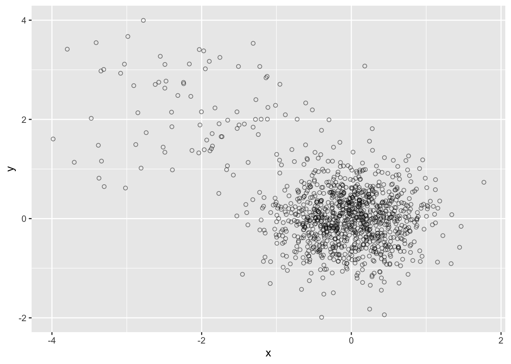
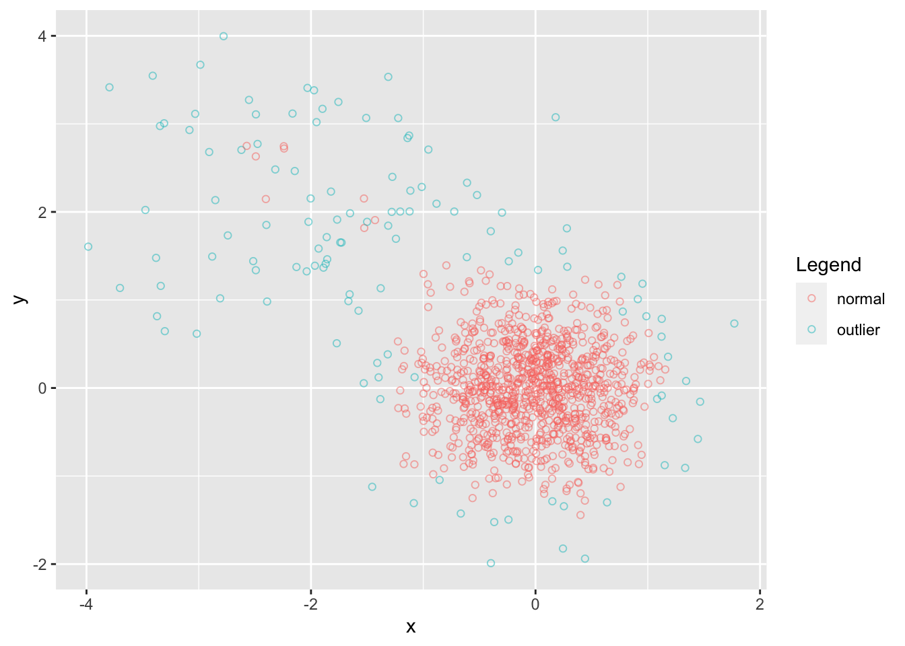
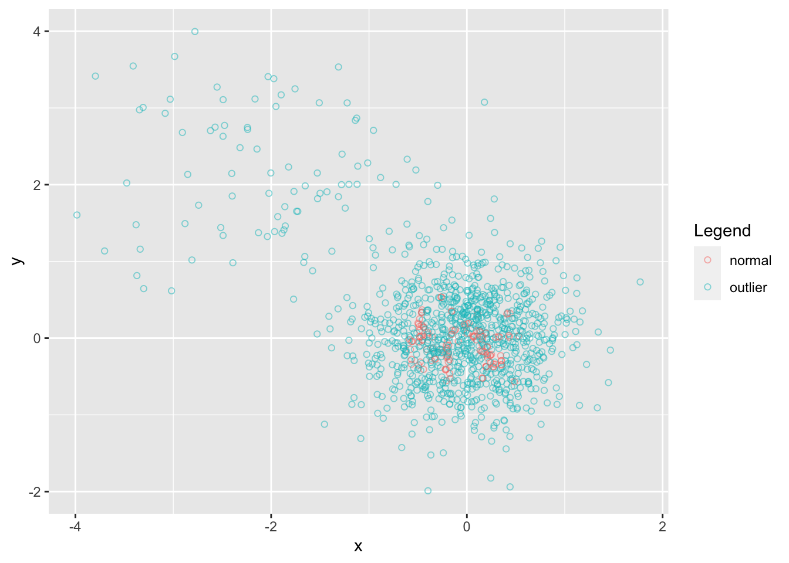

Attaching package: 'MLmetrics'The following object is masked from 'package:base':
RecallAnomaly detection is a crucial aspect of data analysis that involves identifying patterns in data that do not conform to expected behavior. In this blog post, we’ll explore the fundamentals of anomaly detection in R, covering various techniques, and diving into the unique characteristics of the Isolation Forest algorithm.
Anomaly detection, also known as outlier detection, is the process of identifying instances in a dataset that deviate significantly from the norm. Anomalies can represent critical information, such as fraudulent transactions, system malfunctions, or defects in manufacturing.
Statistical methods, such as Z-Score and Modified Z-Score, involve measuring how many standard deviations a data point is from the mean. Points that fall beyond a certain threshold are considered anomalies.
Density-based methods, like DBSCAN (Density-Based Spatial Clustering of Applications with Noise), identify regions in the data space with lower density, flagging points in sparse regions as anomalies.
Isolation Forest is an ensemble method based on decision trees, particularly designed for anomaly detection. It isolates anomalies more effectively by exploiting the fact that anomalies are typically isolated instances.
Isolation Forest has several advantages for anomaly detection:
Isolation Forest works by recursively partitioning the data into subsets until anomalies are isolated. The idea is that anomalies are more likely to require fewer partitions to be separated from the majority of normal instances.
Attaching package: 'MLmetrics'The following object is masked from 'package:base':
RecallFor the purpose of this blog, we will create a sample data instead of using a specific data set.
n <- 1000
var1 <- c(rnorm(n, 0, 0.5), rnorm(n*0.1, -2, 1))
var2 <- c(rnorm(n, 0, 0.5), rnorm(n*0.1, 2, 1))
outliers <- c(rep(0,n), rep(1, (0.1*n))) + 3
data <- data.frame(var1, var2)
head(data) var1 var2
1 -0.13751982 -0.43006868
2 0.38668441 0.11542851
3 -0.05619019 -0.40391657
4 0.73102514 0.02602187
5 0.36584339 -0.44598605
6 -0.20110447 -0.05275216ggplot(data, aes(x = var1, y = var2)) +
geom_point(shape = 1, alpha = 0.5) +
labs(x = "x", y = "y") +
labs(alpha = "", colour="Legend")
Next, we create an isolation forest from the solitude package with default parameters
#plot data again with outliers identified
ggplot(data, aes(x = var1, y = var2, color = outlier)) +
geom_point(shape = 1, alpha = 0.5) +
labs(x = "x", y = "y") +
labs(alpha = "", colour="Legend")Next, we adjust the threshold to isolate greater outliers.
data$outlier <- as.factor(ifelse(data$prediction >=0.55, "outlier", "normal"))
ggplot(data, aes(x = var1, y = var2, color = outlier)) +
geom_point(shape = 1, alpha = 0.5) +
labs(x = "x", y = "y") +
labs(alpha = "", colour="Legend")We will also look at different variants of isolation forests.
Density Isolation Forest
#plot data again with outliers identified
ggplot(data, aes(x = var1, y = var2, color = outlier)) +
geom_point(shape = 1, alpha = 0.5) +
labs(x = "x", y = "y") +
labs(alpha = "", colour="Legend")
Fair-Cut Forest
Warning in isolation.forest(data, ndim = 1, ntrees = 10, nthreads = 1,
prob_pick_pooled_gain = 1): Passed parameters for deterministic single-variable
splits with no sub-sampling. Every tree fitted will end up doing exactly the
same splits. It's recommended to set non-random split probabilities to less
than 1, or to use the extended model (ndim > 1).#plot data again with outliers identified
ggplot(data, aes(x = var1, y = var2, color = outlier)) +
geom_point(shape = 1, alpha = 0.5) +
labs(x = "x", y = "y") +
labs(alpha = "", colour="Legend")
We can see how different methods detect anomalies differently. Based on the context, and research question the choice of anomaly detection methods are going to vary. Since outliers are subjective, assessing the models performance or accuracy is challenging. In conclusion, anomaly detection is a vital component f data analysis, providing insights into unusual patterns and potential issues within data sets. In R, a variety of techniques, including statistical methods, density-based methods and a powerful Isolation Forest algorithm, can be applied for effective anomaly detection. The spotlight on Isolation Forest highlights its unique attributes and its application in efficiently isolating anomalies within complex data sets.